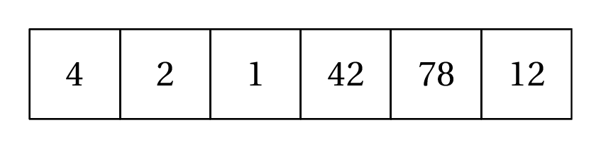

T2.1 Tableaux et listes⚓︎
2.1.1 Notion de tableau, indices⚓︎
En informatique (comme ailleurs...), un tableau permet de stocker de façon structurée plusieurs valeurs, en général de même type1.
Voici comment on se représente traditionnellement un tableau de 6 entiers, avec des cases (ou cellules):

Bien entendu, il faut stocker ce tableau dans un variable et lui donner un nom. Appelons-le t. Ce tableau est ordonné, le premier élément est 4, le deuxième est 2, et le dernier est 12.
On repère chaque élément du tableau par sa position, le numéro de la case, qu'on appelle indice.

Généralement, on utilise la notation t[i] pour désigner l'élement d'indice i du tableau t. Par exemple, dans notre exemple, t[3] contient la valeur 42.
Enfin la taille d'un tableau est le nombre d'éléments qu'il contient. Ici le tableau t a une taille égale à 6.
2.1.2 Tableau et liste de Python⚓︎
Le type list
En Python, on implémente le type abstrait de tableau par le type list. On définit un tableau avec des crochets et on sépare ses éléments par des virgules. Par abus de langage on parle de liste plutôt que de tableau2.
Une liste vide se déclarera par [].
>>> t = [4, 2, 1, 42, 78, 12]
>>> type(t)
<class 'list'>
>>> t[3]
42
>>> len(t)
6
>>> t[6]
Traceback (most recent call last):
File "<pyshell>", line 1, in <module>
IndexError: list index out of range
>>> t[-1]
12
>>> liste_vide = []
>>> len(liste_vide)
0
Remarques:
- on obtient la taille d'une liste avec la fonction
len; - un indice supérieur à
len(t) - 1provoque une erreurIndexError: list index out of range(en dehors de la liste); - on peut utiliser les indices négatifs: en particulier l'indice -1 permet d'accèder facilement au dernier élement.
2.1.3 Modification de liste⚓︎
En Python, les objets de type list sont modifiables (on emploie le mot mutable). Et c'est souvent une bonne chose, car des listes peuvent évoluer après leur création.
Modification d'un élément existant
On modifie un élément du tableau par simple affectation, en écrasant sa valeur avec la nouvelle.
>>> famille = ["Bart", "Lisa", "Maggie"]
>>> famille[0] = "Bartholomew" # oui, c'est son vrai nom
>>> famille
['Bartholomew', 'Lisa', 'Maggie']
Ajout d'un élément en fin de liste
La méthode append permet d'ajouter un élément en fin de liste (et donc d'augmenter la taille de la liste).
>>> famille = ["Bart", "Lisa", "Maggie"]
>>> famille.append("Homer")
>>> famille
['Bart', 'Lisa', 'Maggie', 'Homer']
Suppression d'un élément
La métode remove permet de supprimer la première occurrence de l'élément (et seulement la première). À condition bien entendu que l'élément soit dans la liste...
>>> matieres = ["nsi", "maths", "anglais", "français", "maths"]
>>> matieres.remove("maths")
>>> matieres
["nsi", "anglais", "français", "maths"]
>>> matieres.remove("espagnol")
Traceback (most recent call last):
File "<pyshell>", line 1, in <module>
ValueError: list.remove(x): x not in list
2.1.4 Création de listes⚓︎
Jusqu'à présent on a créé des listes en extension, c'est-à-dire qu'on a écrit tous les éléments un par un entre crochets. Voici deux autres façons de faire, souvent pratiques et parfois plus rapides lorsque la taille de la liste est grande.
Avec une boucle for
On crée une liste vide, puis on lui ajoute élément par élément.
Création d'une liste contenant les entiers multiples de 3 ou de 5 inférieurs à 100:
| üêç Script Python | |
|---|---|
1 2 3 4 | |
Élements identiques
Il est souvent pratique d'initialiser une liste de taille donnée, souvent en la remplissant de la même valeur, souvent 0. Par exemple, pour produire une liste contenant 26 zéros:
>>> lst = 26 * [0]
>>> lst
[0, 0, 0, 0, 0, 0, 0, 0, 0, 0, 0, 0, 0, 0, 0, 0, 0, 0, 0, 0, 0, 0, 0, 0, 0, 0]
2.1.5 Parcours de listes⚓︎
Il existe principalement deux méthodes pour parcourir une liste: par ses éléments ou par les indices. Mais dans les deux cas on utilise une boucle for.
Parcours par élément
On l'a déjà rencontré sur la boucle for:
| üêç Script Python | |
|---|---|
1 2 3 | |
Bart
Lisa
Maggie
Parcours par indice
Chaque élément étant accessible par son indice (de 0 à len(liste) - 1 ), il suffit de faire parcourir à une variable i l'ensemble des entiers de 0 à len(liste) - 1, par l'instruction range(len(liste)) :
Le code suivant affichera donc la même chose que le précédent:
| üêç Script Python | |
|---|---|
1 2 3 | |
2.1.6 Exercices⚓︎
Exercice 1
Dans la liste suivante:
- remplacer
"Loki"par"Thor" - ajouter
"Dr. Strange" - supprimer l'intrus.
avengers = ["Black Widow", "Captain America", "Loki", "Iron Man", "Hulk", "Batman", "Hawkeye"]
avengers[2] = 'Thor'
avengers.append('Dr. Strange')
avengers.remove('Batman')
Exercice 2
Construire une liste de 100 éléments tous égaux à 0. Puis remplacer tous les éléments d'indice impair par des 1.
| üêç Script Python | |
|---|---|
1 2 3 4 | |
Exercice 3
Trouvez le nombre qui est exactement à la même place dans la liste list1 et dans la liste list2, sachant que :
- les deux listes ont la même taille
- vous n'avez droit qu'à une seule boucle
for.
list1 = [8468, 4560, 3941, 3328, 7, 9910, 9208, 8400, 6502, 1076, 5921, 6720, 948, 9561, 7391, 7745, 9007, 9707, 4370, 9636, 5265, 2638, 8919, 7814, 5142, 1060, 6971, 4065, 4629, 4490, 2480, 9180, 5623, 6600, 1764, 9846, 7605, 8271, 4681, 2818, 832, 5280, 3170, 8965, 4332, 3198, 9454, 2025, 2373, 4067]
list2 = [9093, 2559, 9664, 8075, 4525, 5847, 67, 8932, 5049, 5241, 5886, 1393, 9413, 8872, 2560, 4636, 9004, 7586, 1461, 350, 2627, 2187, 7778, 8933, 351, 7097, 356, 4110, 1393, 4864, 1088, 3904, 5623, 8040, 7273, 1114, 4394, 4108, 7123, 8001, 5715, 7215, 7460, 5829, 9513, 1256, 4052, 1585, 1608, 3941]
| üêç Script Python | |
|---|---|
1 2 3 4 5 6 | |
Exercice 4
On considère la liste
temp = [11, 28, -16, -18, -10, 16, 10, 16, 2, 7, 23, 22, -4, -2, 19, 16, 22, -8, 18, -14, 29, -1, 16, 22, -5, 6, 2, -4, 9, -17, -13, 22, 14, 24, 22, -9, -18, -9, 25, -11, 17, 17, 25, -10, 2, -18, 29, 14, -16, 7]
Construire la liste temp_pos qui ne contient que les éléments positifs de temp.
| üêç Script Python | |
|---|---|
1 2 3 4 | |
Exercice 5 (BNS)
Programmer la fonction recherche, prenant en paramètre un tableau non vide tab (type list) d'entiers et un entier n, et qui renvoie l'indice de la dernière occurrence de l'élément cherché. Si l'élément n'est pas présent, la fonction renvoie la longueur du tableau.
Exemples :
>>> recherche([5, 3],1)
2
>>> recherche([2,4],2)
0
>>> recherche([2,3,5,2,4],2)
3
| üêç Script Python | |
|---|---|
1 2 3 4 5 6 7 8 9 10 | |
Exercice 6
Construire une liste de taille 26 contenant le nombre d'occurences de chaque lettre de l'alphabet dans le texte suivant:
texte_long = '''
mpaowhuqhvyywtvypjkfrrasexnwzrgpargvpjlfbjsxxjipjgkyscgdiqswpvpbzigfkljhicuftshk
qekwqojwchsgyuvakynjpxlacrnbojawdisjzbcqjflhgqofhccdxnqpbnxcxcypawaqgzbikretwlkf
qodnoseirzvssdczsyczqjbugcgjuorxciblnojkvygxqirysffsmjyokjdsxlymjokgodupumjoxcmi
teeenikwlkzidirjnmexsmqjefsgpbpoynusfpudmxwcwrzzqzuobjtlyshbvvgjkhoujsdlnsyfshuu
mfmqmssbyrzybswyswbdmqmcwsdudrfdnmlmnchossxcwarfmpkrcqcyvyjkplzexrnebukxhqbnzkgh
nalfpkxghypaimemqzmcreozagufiljxdmgrwftyajtonfisefxujtdmpgxttugxhvpgdqhvgzohovbe
qaafwqfiokzhtbxgoxpzzvbswlxdtykgufqevlmjjrddufrogzsfzzuaqpqfzinvmfpcylgftkkhqylp
rgzywwefwghhrivsjtvbbcixhztwujdqqesdertmtwdricrzmwsibhstsgnnxbvqnyklcbrcxtycvcww
ojphbqyrjffndkgwqfqvarfupklwwixekudmbspqtydkegltqvwjzfooscehpnfwvvnkrxsfakwezvol
mpvnprcrwomddjneyrhpxmnrveibxqxcjluezypvsbfudilpjdqflsdhwucjgtusxjjcnewamoewwjhu
'''
| üêç Script Python | |
|---|---|
1 2 3 4 | |

-
m√™me si Python l'autorise, il n'y a pas beaucoup de situations o√π on va cr√©er un tableau avec des valeurs de types diff√©rents. ↩
-
en fait la liste est un autre type abstrait de donn√©es en informatique. Python identifie un peu les deux. C'est un peu plus compliqu√© en r√©alit√©, mais c'est une autre histoire... ↩